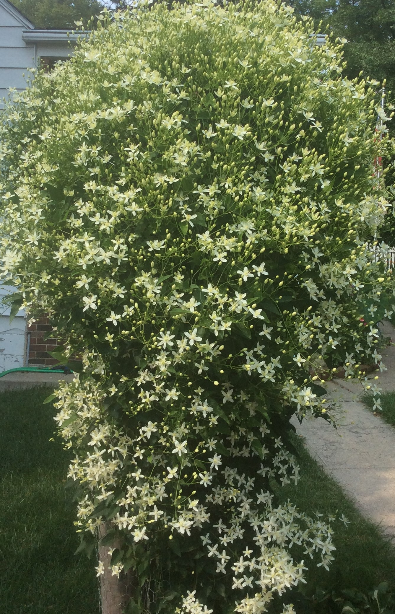

SWEET AUTUMN CLEMATIS
Sweet Autumn Clematis is a hardy perennial climber. It can easily climb 20 feet if It has something to attach to or it will climb along a fence.

- These climbers definitely have to planted in the ground. They bloom in late August through September.
- In late fall, after it is completely finished blooming, you can prune on the plant substantially, cutting it back to just a few feet.
- Allow leaves to nestle in, around the base of the plant, to protect it in the winter.
Go to Fall Flower Home Page